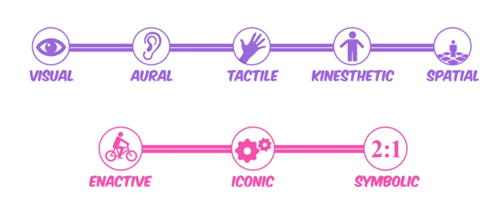
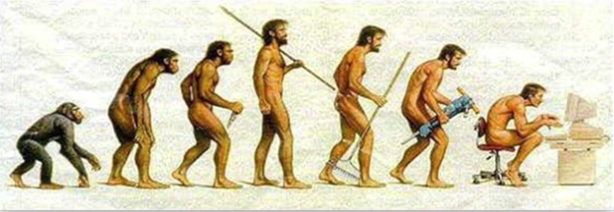

John Shaughnessy
AltspaceVR
Communication dwarfs gaming.
VR will change how we communicate
with each other
and our computers.
We communicate what we understand.
These took millenia to develop.
Communication happens in channels.
VR is dynamic by default.
We are all cyborgs.
Augment or atrophy.
VR requires new input devices.
Programming is still too difficult.
Focus on what's in front of us.
AltspaceVR
Connect in the most natural and fulfilling way possible online.
The Holographic Web
AltspaceVR SDK
Sandbox
Delivery System
Live IDEs
Open Source Community
Open 3D Content
developer.altvr.com
jobs.altvr.com
john@altvr.com